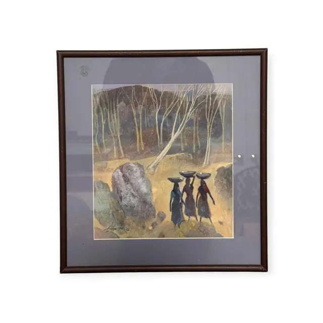
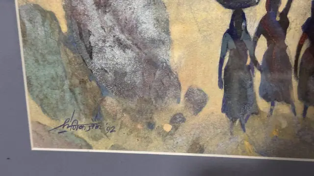
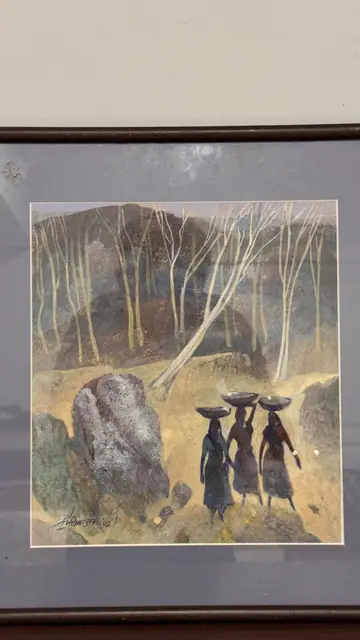

Paintings & Prints
Three Women Carrying Baskets Through Birch Woods, Signed, Framed, 1992
· 1992 (dated in the signature)
Price Upon Request



About the Item
Three slender women in dark indigo, teal and maroon saris walk away from the viewer along a pale ochre path, each balancing a shallow dark basket on her head. Behind them a stand of leafless white-trunked trees rises against a dusky violet-brown hillside, the trunks drawn as fine pale lines over mottled, sponged colour. Large grey and lavender boulders block the left foreground, painted with dry stippled highlights that give the whole picture a granular, tapestry-like surface. The palette is muted and dusky - stone grey, olive, plum and sand - with the figures reading as dark silhouettes against the lit path. It is floated on a lavender-grey mat in a plain dark timber frame under glass. Medium: gouache or tempera on paper. Signed lower left within the image, in dark ink. Inscribed on the reverse or mount: '92 (date following the signature). Condition: Image and mat look clean and unfaded; a small scuff or paper flaw on the mat above the image at upper left; heavy reflections on the glass.
Details
- Creation Year:
- 1992 (dated in the signature)
- Dimensions:
- Height: 16.0 in (40.64 cm)
Width: 14.0 in (35.56 cm)
outside of frame - Medium:
- gouache or tempera on paper
- Period:
- 20Th
- Condition:
- Offered in the condition shown in the photographs.
- Reference Number:
- VO-149
- Documentation:
- no certificate photographed
- Gallery Location:
- '92 (date following the signature)